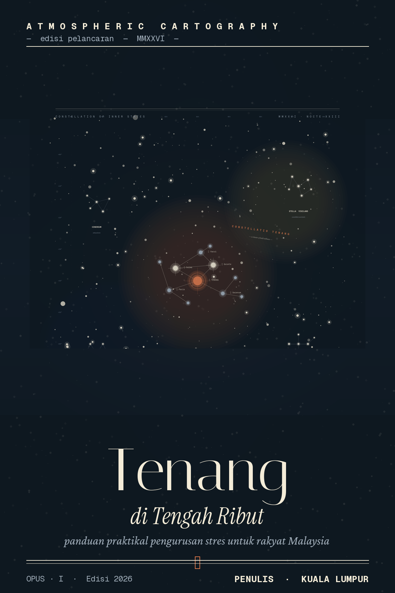
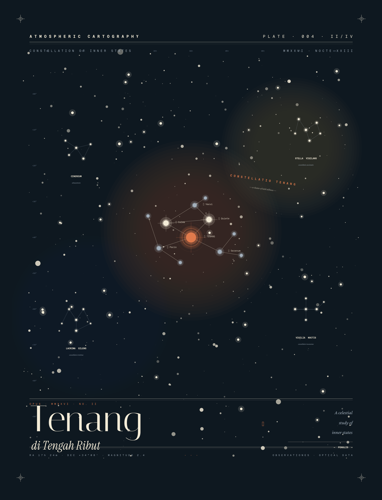

Belajar sistem 90 hari yang membantu anda kawal tekanan, tidur lebih lena dan kurangkan overthinking — dalam bahasa kita, untuk realiti hidup di Malaysia.
Dapatkan Akses Sekarang →
Panduan pengurusan stres dalam Bahasa Melayu — bukan teori berat, tapi langkah yang boleh terus diamalkan.
Direka khas untuk individu yang berdepan tekanan kerja, kewangan dan kehidupan harian.
Bukan tips rawak. Satu sistem langkah demi langkah yang membawa anda dari kucar-kacir ke lebih tenang.
Hasilnya: anda belajar kawal tekanan, tidur lebih lena, dan kurangkan overthinking — satu langkah kecil dalam satu masa.
250+ muka surat panduan praktikal — dari faham stres sampai bina ketahanan jangka panjang.
Boleh cetak atau isi digital. Di sinilah anda betul-betul buat kerja, bukan baca je.
Toolkit digital, senarai helpline Malaysia, bacaan lanjut, dan panduan cetak worksheet.
Beli sekali, simpan selamanya. Boleh muat turun semula bila-bila masa anda perlukan.
Kita selalu cakap pada diri sendiri "okay je", "boleh tahan", "nanti hilang sendiri". Tapi stres yang dibiar terlalu lama tak hilang — ia berkumpul, dan akhirnya datang dalam bentuk lain:
Dah baring, tapi fikiran tak nak berhenti. Bangun pagi rasa macam tak cukup rehat.
Satu perkara kecil pun boleh diulang-ulang dalam kepala sampai rasa penat sendiri.
Perkara remeh pun terasa besar. Sabar makin pendek tanpa anda sedar.
Bukan penat badan. Penat dalaman yang tak hilang walaupun dah cuti hujung minggu.
Nampak okay di luar. Tapi dalam hati, anda tahu anda sedang bergelut sorang-sorang.
Terus "function" sebab ada tanggungjawab — sampai satu hari rasa nak give up semua.
Sambil semua ni berlaku — anda masih kena pergi kerja. Masih kena jaga keluarga. Masih kena senyum pada orang. Masih kena cakap "saya okay je" bila orang tanya khabar.
Sampai satu hari, anda berdiri depan cermin… dan rasa macam tak kenal lagi siapa yang anda tengok.
Pukul 11 malam. Anak baru je tidur. Pinggan masih bertimbun di sinki. Esok ada tarikh akhir kerja, dan dalam group keluarga, mak baru hantar mesej "Bila nak balik kampung?"
Anda duduk di sofa. Telefon di tangan. Tapi anda tak scroll. Anda cuma… duduk.
Dan satu fikiran mula merangkak masuk:
"Aku tak boleh teruskan macam ni."
Bukan sebab kerja teruk. Bukan sebab keluarga tak sayang. Bukan sebab hidup teruk.
Tapi sebab anda dah terlalu lama jadi "orang yang kuat". Yang uruskan semua. Yang okay. Yang tahan.
Dan dalam senyap, di tengah malam, anda mula tertanya — adakah ini saja hidup yang ada? Akan terus rasa berat macam ni sampai bila?
Saya tulis untuk tunjukkan — ada jalan yang lebih baik.
Bukan motivasi kosong. Bukan "kena positif je". Bukan "kena kuat, hidup memang macam ni".
Tapi satu pendekatan yang berasaskan kajian saintifik, yang direka untuk realiti hidup di Malaysia — bukan disalin bulat-bulat dari buku luar negara — dan yang menghormati keadaan anda sebagai pekerja yang penat, anak yang bertanggungjawab, dan manusia yang kadang-kadang… tak okay. Dan itu tak apa.
Panduan Praktikal Pengurusan Stres untuk Rakyat Malaysia

Belajar bezakan stres "biasa" dengan tanda yang perlu perhatian. Faham apa yang berlaku dalam badan — dalam bahasa mudah.
Kenali isyarat fizikal stres yang ramai kita abaikan. Bezakan burnout dengan penat biasa.
10 perangkap fikiran paling biasa, dan kaedah mudah untuk tenangkan fikiran yang berputar-putar.
3 teknik pernafasan untuk situasi berbeza. Mindfulness untuk orang sibuk — tak perlu duduk bersila berjam-jam.
Cara cakap "tidak" dengan berhemah. Urus tenaga, bukan sekadar masa. Untuk yang rasa ditarik segala arah.
Sains tidur yang mudah difahami. Makanan yang membantu vs. memburukkan keresahan. Gerak badan untuk yang sibuk.
Cara minta tolong tanpa rasa lemah. Cara berkomunikasi untuk perbualan yang sukar.
Cara tanam tabiat baik yang lekat — tanpa bergantung pada semangat yang naik-turun.
Apa nak buat masa rasa nak panik. Panduan praktikal cari bantuan profesional di Malaysia.
Gabungkan semua jadi satu sistem peribadi. Rancangan realistik 90 hari. Cara bangun semula bila tersasar.
Akses serta-merta · Jaminan 30 hari · Bayaran selamat
Baca ebook — anda dapat pengetahuan.
Isi worksheet — anda dapat perubahan.
Boleh dicetak atau diisi secara digital. Sesuai juga untuk dikongsi dengan kaunselor anda.
Senarai aplikasi meditasi, penjejak mood, aplikasi tidur, channel YouTube BM, podcast tempatan, dan platform telehealth — dengan cadangan untuk 3 bajet berbeza.
Senarai helpline 24 jam, hospital psikiatri awam, NGO sokongan, dan platform telehealth Malaysia — lengkap dengan anggaran kos.
40+ buku berkualiti disusun mengikut topik — termasuk sumber tempatan, podcast pilihan, dan kursus dalam talian percuma.
Panduan cetak lengkap, cara susun dalam fail, jadual 90 hari realistik, dan tips peribadikan worksheet anda.
Setiap orang belajar dengan cara berbeza. Sebab tu kami sediakan 3 format — anda pilih yang paling sesuai dengan hidup anda.
Ebook 10 bab + 10 worksheet boleh cetak. Sesuai untuk anda yang suka baca, tulis nota, dan buat ikut rentak sendiri.
Audio podcast setiap bab — dengar sambil memandu, bersenam, atau buat kerja rumah. Belajar tanpa perlu duduk depan skrin.
Video explainer setiap bab — penerangan visual step-by-step. Faham konsep dengan lebih cepat & mudah ingat.
Audio & Video tersedia dalam pakej Lengkap & Premium — lihat pilihan di bawah.
Bukan janji kosong — inilah rupa sebenar apa yang anda akan dapat.
* Gambar sebenar kandungan akan dipaparkan di sini.
Tiga pilihan, satu matlamat — bantu anda hidup lebih tenang. Pilih ikut cara anda suka belajar & bajet anda.
Bukan sebab nilainya kurang. Tapi sebab saya mahu panduan ini sampai kepada seramai mungkin rakyat Malaysia yang sedang bergelut.
Satu sesi kaunseling boleh kos RM150–RM350. Pakej ini memberi anda panduan yang boleh dirujuk berulang kali — pada harga jauh lebih rendah.
Harga di atas adalah harga pelancaran. Harga promosi boleh ditamatkan pada bila-bila masa tanpa notis.
Baca ebook. Cuba tekniknya. Isi worksheet. Kalau dalam 30 hari anda rasa ia tak membantu — email saya, dan saya pulangkan setiap sen.
Tanpa soalan menyusahkan. Tanpa drama.
Saya berani bagi jaminan ini sebab saya yakin dengan isi kandungannya. Dan saya betul-betul tak mahu sesiapa rasa terbeban dengan sesuatu yang tak sesuai untuk mereka.
Sesuai. Ebook ini sebenarnya paling berkesan sebagai langkah pencegahan — bukan tunggu sampai krisis. Belajar uruskan tekanan sebelum ia jadi berat adalah pilihan yang paling bijak.
Tidak. Ebook ini adalah panduan bantu-diri — bukan pengganti bantuan profesional. Kalau anda perlukan terapi, ebook ini sebenarnya pelengkap yang baik untuk dibawa bersama.
Setiap bab ambil lebih kurang 15–20 minit untuk dibaca. Tapi ini bukan buku yang dihabiskan dalam seminggu — ia panduan amalan. Kebanyakan pembaca ikut sepanjang 8–12 minggu sambil mengamalkan worksheet.
Digital (PDF). Anda boleh baca di telefon, tablet, laptop, atau cetak sendiri kalau lebih selesa.
Selepas pembayaran, anda akan terima emel dengan pautan muat turun dalam beberapa minit. Akses kekal — boleh muat turun semula bila-bila masa.
Emel saya dalam tempoh 30 hari, dan saya pulangkan 100% wang anda. Tiada soalan menyusahkan.
Anda boleh tutup tab ini dan teruskan hidup seperti biasa. Esok mungkin sama. Minggu depan mungkin sama.
Atau — anda boleh mula hari ini. Buka ebook malam ini. Belajar satu teknik mudah dalam 5 minit. Cuba sebelum tidur. Dan rasa sesuatu yang dah lama anda rindu — sedikit ketenangan.
Bermula RM49 sahaja — kurang daripada satu sesi kaunseling. Dan ada jaminan 30 hari: kalau tak membantu, anda dapat wang anda semula.
Anda mungkin antara pembaca terawal yang akan membentuk kisah kejayaan seterusnya.